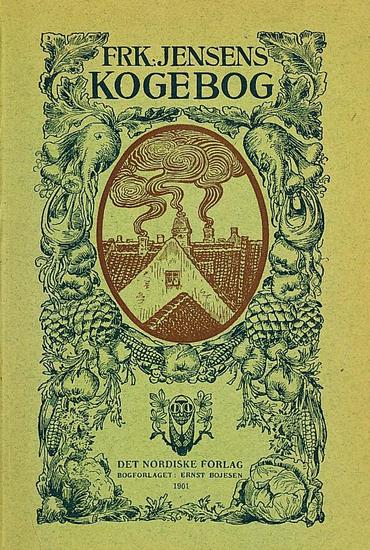
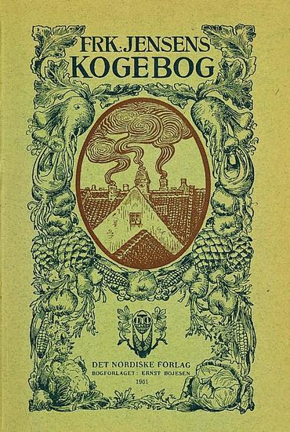

Brug nu bare koldt vand fra hanen
Traditionelt
Traditioner!
Det betyder at gøre, som folk altid har gjort, ud fra den filosofi, at den bedste metode overlever - sådan lidt Darwin, survival-of-the-fittest-agtigt.
Men lige den her dinosaurus bliver holdt kunstigt i live, og jeg synes, vi skal se at få den udryddet hurtigst muligt.
 Den traditionelle tanke, når man bruger gær, er, at det skal opløses i noget lunkent, for at det virker.
Det er korrekt, at den stamme af gærsvampe, som vi køber i butikkerne formerer sig hurtigst ved cirka 25°C eller varmere, og det var ganske givet nødvendigt på Frøken Jensens tid, hvor køkkenet var uopvarmet, at man lige fyrede op i brændekomfuret.
Altså hallo.
Den traditionelle franksbrøds-opskrift vil endda have, at man smelter smør i en gryde, tilsætter mælk og dernæst rører gæren ud i blandingen.
Det er forkert på flere forskellige måder:
Det betyder at gøre, som folk altid har gjort, ud fra den filosofi, at den bedste metode overlever - sådan lidt Darwin, survival-of-the-fittest-agtigt.
Men lige den her dinosaurus bliver holdt kunstigt i live, og jeg synes, vi skal se at få den udryddet hurtigst muligt.
 Den traditionelle tanke, når man bruger gær, er, at det skal opløses i noget lunkent, for at det virker.
Det er korrekt, at den stamme af gærsvampe, som vi køber i butikkerne formerer sig hurtigst ved cirka 25°C eller varmere, og det var ganske givet nødvendigt på Frøken Jensens tid, hvor køkkenet var uopvarmet, at man lige fyrede op i brændekomfuret.
Altså hallo.
Den traditionelle franksbrøds-opskrift vil endda have, at man smelter smør i en gryde, tilsætter mælk og dernæst rører gæren ud i blandingen.
Det er forkert på flere forskellige måder:
- Gæren risikerer at blive for varm og begynde at dø, 35°C er absolut smertegrænse.
- Gæren bliver fedtet ind i smør, dét bryder den sig ikke ubetinget om.
- Der er ingen kulhydrater (sukker/mel) i gryden, så den hyperaktive gær kan dø af sult, hvis ikke man skynder sig at få den over i melen.
Optimalt
Her er den bedste måde at bruge gær på, efter mine erfaringer:
Når gær normalt er i fast form, er det fordi, hvert lille gær-"dyr" holder i hånd med sin sidemand. Det er forsvar mod en ond verden (andre mikroorganismer), som vil æde gæren. Det kalder man kultur.
Det er lidt ligesom soldater, der danner en skjoldmur.
Sukkeret gør gæren flydende, fordi de får kræfter til at dele sig, og så kommer der uorden i gellederne.
- Smuldr gæren i en kop.
-
Lige før du skal bruge den, så hæld en lille smule sukker på
og tilsæt et par dråber koldt vand.
Du kan også bruge sirup. -
Rør gæren tynd med en gaffel (eller bagsiden af en teske).
I starten tror man det ikke, man det kan blive lige så tyndt som kakaomælk. -
Kom den flydende gær i melblandingen.
Tilsæt herefter koldt vand fra hanen til blandingen.
Når gær normalt er i fast form, er det fordi, hvert lille gær-"dyr" holder i hånd med sin sidemand. Det er forsvar mod en ond verden (andre mikroorganismer), som vil æde gæren. Det kalder man kultur.
Det er lidt ligesom soldater, der danner en skjoldmur.
Sukkeret gør gæren flydende, fordi de får kræfter til at dele sig, og så kommer der uorden i gellederne.
Hvor varm er dejen egentlig?
Men når nu gæren trives bedst ved 25°C,
hvorfor så ikke hæve temperaturen på dejen til det optimale?
Her kommer lidt slump-formel-fræseri og lidt sund fornuft.
Her kommer lidt slump-formel-fræseri og lidt sund fornuft.
Formelfræs
| ΔTstart ≈ |
|
|||
| = |
|
|||
| = |
|
|||
| = |
|
Altså får man:
Tstart = Tstue - ΔTstart
≈
20°C - 4 K =
16°C
Hvis man bruger mælk fra køleskabet, så ender man på knap 15°C, altså ikke den store forskel.
Jeg gider ikke skrive alle forudsætninger op og forklare i detaljer, men resultatet er, at en dej lavet med koldt vand er mindst 16°C varm.
Og i virkeligheden er den mere, fordi du varmer den op, når du ælter - både fordi dine hænder er varme, men også pga gnidningsmodstanden (friktion). Dét er rigeligt til at hæve den til stuetemperatur.
Og gæren arbejder i dejen, og hæver lynhurtigt temperaturen yderligere, så den når op omkring de optimale 25°C.
P.S. Min kære, gamle, højtærede kemilærer, Tom Sillesen, ville rømme sig let, hvis han så, at jeg blandede Celcius (°C) og Kelvin (K) sammen på den måde ;-) Men resultatet passer stadig.
Sund fornuft
Det er alt for risikabelt
at prøve at tvinge en dej op på en bestemt temperatur.
Man kommer hel sikkert til at slå sin gær ihjel
på et eller andet tidspunkt.
Det går også tit godt - men vær sikker på, at går det galt, så bliver det med garanti den dag, hvor du står og skal have gæster og har ekstra travlt og overhovedet ikke tid til at lade dejen hæve længere...
Man skal holde tungen lige i munden, og det er ikke sjovt!
Det er meget sjovere at kunne koncentrere sig om at putte spændende ting i dejen, end at skulle bruge tid og overskud på at temperere vand - specielt når man, som jeg, har gang i 117 ting på én gang, og allerede har glemt halvdelen.
I teorien tager det måske 5 minutter længere for dejen at hæve på koldt vand, men det er altså ikke noget, jeg har lagt mærke til i praksis.
Eneste fornuftige alternativ er at bruge vand på stuetemperatur - men hvem har det til at stå?
Og hvis man har, hvor gammelt er det så lige, det er?
Vokser der spændende ting i det, som kunne give mavekneb?
Det går også tit godt - men vær sikker på, at går det galt, så bliver det med garanti den dag, hvor du står og skal have gæster og har ekstra travlt og overhovedet ikke tid til at lade dejen hæve længere...
Man skal holde tungen lige i munden, og det er ikke sjovt!
Det er meget sjovere at kunne koncentrere sig om at putte spændende ting i dejen, end at skulle bruge tid og overskud på at temperere vand - specielt når man, som jeg, har gang i 117 ting på én gang, og allerede har glemt halvdelen.
I teorien tager det måske 5 minutter længere for dejen at hæve på koldt vand, men det er altså ikke noget, jeg har lagt mærke til i praksis.
Eneste fornuftige alternativ er at bruge vand på stuetemperatur - men hvem har det til at stå?
Og hvis man har, hvor gammelt er det så lige, det er?
Vokser der spændende ting i det, som kunne give mavekneb?
Alternativ, hvis du har travlt
Har du lige fundet ud af, at der kommer gæster?
Har du ikke en krumme i huset??
Gå ikke i panik! Bag et snydebrød i stedet, det er klar til servering på en time! Og der er næsten ingen oprydning.
Gå ikke i panik! Bag et snydebrød i stedet, det er klar til servering på en time! Og der er næsten ingen oprydning.
2012-09-04